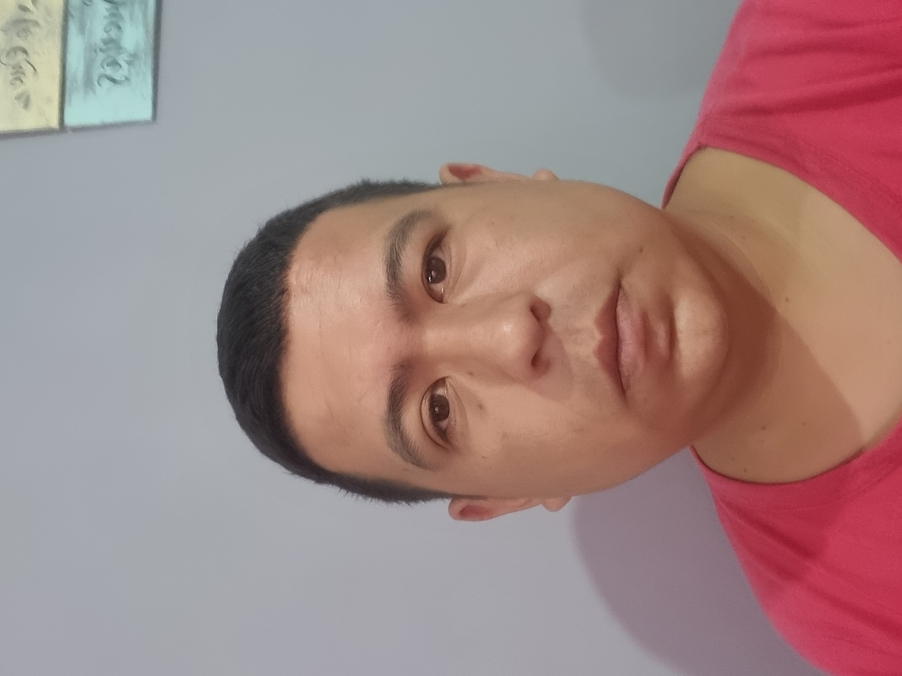

Mauro Basconcella
estudiante de administracion
Datos
Argentina ,Buenos Aires
Edad: 29 años
Mail: maurozion462@gmail.com
Telefono:1173644813
Experiencia
Actualmente trabajo en el correo andreani desde 2015, estoy en la parte de administracion
Datos Academicos
Secundario completo
Actualmente cursando el 2DO año de la carrera de licenciatura en administracio
actualmente cursando Argentina programa 4.0, la parte de front-end
objetivos
Mis objetivos son a nivel personal consolidarme en el sector tecnologico, y a nivel colectivo poder estar a cargo de un equipo de trabajo
Descargar CV